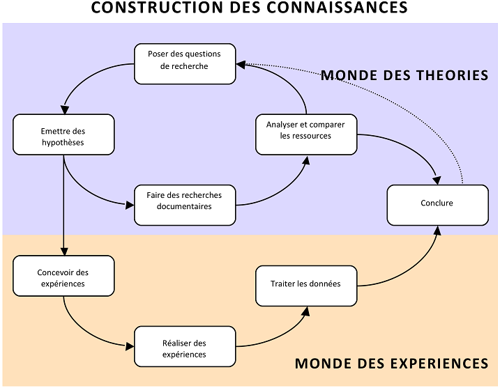

Vous êtes maintenant membre d’un groupe d’expert. Votre but est de devenir dans les prochaines séances un expert d’un domaine spécifique de connaissance. Mais comment devenir un expert ? Comment « construire » une connaissance ? Bien sûr, vous êtes familier des moteurs de recherche comme Google, que vous utilisez pour trouver des informations sur internet. Mais la plupart des connaissances que vous trouvez sur internet et dans les livres ont été, à l’origine, produites par des personnes qui ont fait des recherches et écrit sur celles-ci. Aussi, en plus des recherches documentaires, il semble important de faire aussi des expériences par vous–même et ainsi créer une « nouvelle connaissance », comme les vrais scientifiques le font.
Les étapes que vous suivrez dans le processus de devenir un expert sont représentées dans le schéma ci-dessous. Comme vous pouvez le voir, il y a de multiples cheminements dans le schéma. De façon schématique, il y a deux voies principales. Une voie parcourt « le monde des théorie », dans laquelle vous reconnaitrez le processus de recherche documentaire décrit dans un autre document. L’autre voie navigue entre « le monde des théories» et « le monde des expériences ». Aussi, si vous faîtes des expériences (réelles ou simulées), il vous faut suivre cette deuxième route. Ce schéma peut vous paraître compliqué mais une fois que vous commencez le travail, vous trouverez que les activités s’enchaînent de façon assez logique. Chaque étape est détaillée dans d’autres documents.
